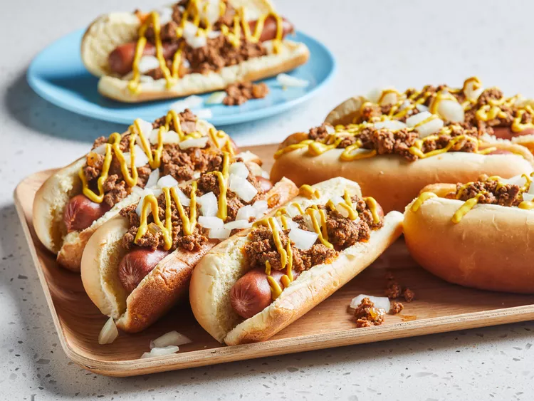

Coney Island Hot Dogs
Home

The Best Style of Hot Dogs Around!
Today we will be going over a favorite of mine, Coney Island Hot Dogs.
That's right you heard me! If you give me a minute of your time I will tell you why...
The perfect blend of onions, ketchup, mustard, cumin, andd cayenne pepper are what make this a beast of a dog!
Make sure you got all your necessities prepared for this dish, as we dive in.
Please ensure that you read the instructions cleraly and precisley.
Its okay to make a few mistakes. Make this recipe your own!
Ingredients
- 1 1/2 pounds lean ground beef
- 2 cups water, or as needed
- 3/4 cup diced onion, divided
- 1/3 cup ketchup
- 2 tablespoons butter
- 2 cloves garlic, crushed
- 2 tablespoons chili powder, or more to taste
- 1 1/2 teaspoons salt, or to taste
- 1 teaspoon freshly ground black pepper, or to taste
- 1 teaspoon ground cumin, or to taste
- 1/2 teaspoon celery salt, or to taste
- 1 pinch cayenne pepper, or to taste
- 8 all-beef hot dogs
- 8 hot dog buns
- 1/4 cup prepared yellow mustard, or to taste
Steps
- Gather all the ingredients
- Combine ground beef, water, 1/2 cup diced onion, ketchup, butter, garlic, chili powder, salt, black pepper, cumin, celery salt, and cayenne pepper together in a pot. Mix with a potato masher or spatula over medium-high heat until mixture has a finely ground consistency and begins to bubble, about 10 minutes.
- Bring beef mixture to a simmer, reduce heat to medium-low, and cook, stirring occasionally, until sauce thickens and reduces, about 1 hour. Season with salt and pepper to taste.
- Bring a large pot of water to a boil. Cook hot dogs in boiling water until heated through, 5 to 7 minutes.
- Preheat the oven to 350 degrees F (175 degrees C). Arrange hot dog buns on a baking sheet. Cook buns in the preheated oven until soft and warm, 2 to 3 minutes.
- Place 1 bun on a plate. Place a hot dog in the bun and top with meat sauce. Drizzle yellow mustard and a portion of remaining diced onion over the meat sauce. Repeat with remaining hot dogs.
- Enjoy your meal!